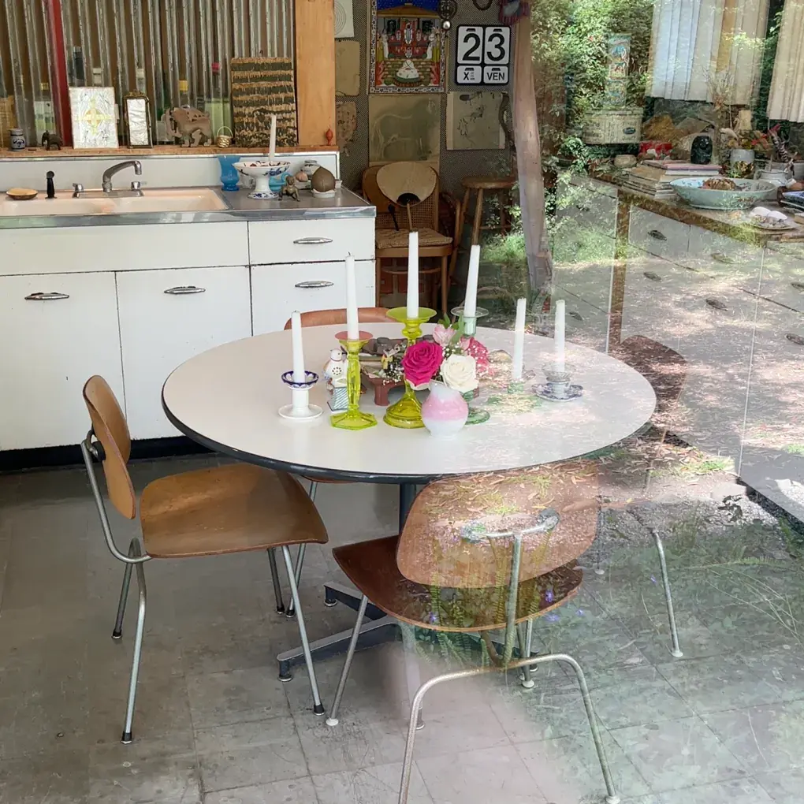

I am the founder of t4t, an idealistic social network designed to bring people
together who are trans or gender non-conforming.
My other creative endeavors are listed below..
call: 612-669-4184,
write: elliottetzkorn@posteo.com

The following are my software projects. If you are interested, I also
record music,
create visual art,
and write.